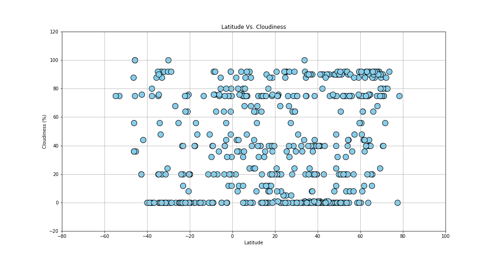
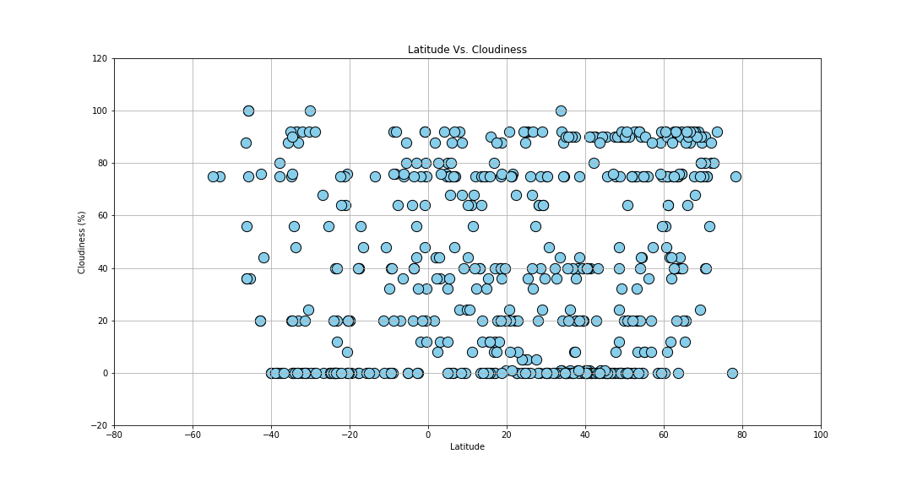

Welcome to Latitude comparisons
This is a visualization of a previously conducted project done to compare various cities across the world, compiled randomly through the Citipy database. The cities gathered (numbering at roughly 500) then had their associated weather data collected using the OpenWeatherMap API, and graphs were created with Python's Matplotlib module in order to visualize how their latitudes related to four other aspects of their climate: Maximum temperature, humidity, cloud cover, and wind speed. This website provides visualizations from Matplotlib of all four comparisons, and additionally lists the data used in comparisons.
All measurements were taken in late September of 2018. Click any of the boxes to the left for a detailed analysis of a particular chart.

Temperature
Humidity
Cloud Cover
Wind Speed